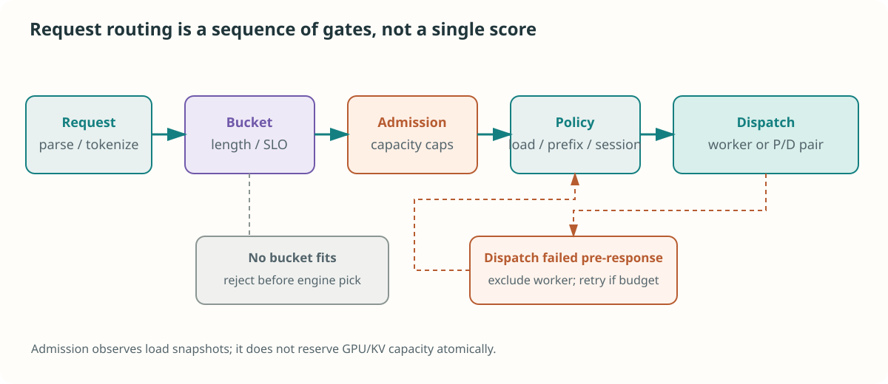
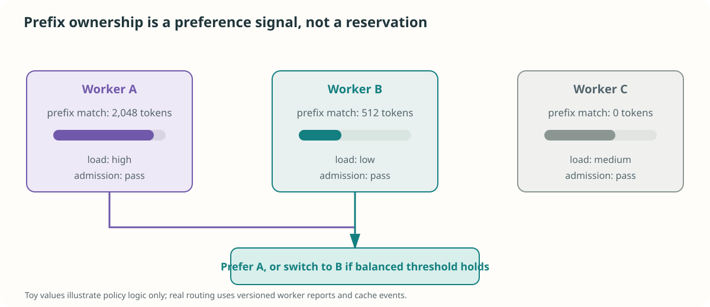

第 16 章 · KV-aware Router
SGLang Router：KV-aware Routing、Admission 与 Session Affinity
拆解 sgl-router 的 bucket、Power-of-Two、cache-aware、session affinity、admission 与 P/D worker pair 选择。
拆解 sgl-router 的 bucket、Power-of-Two、cache-aware、session affinity、admission 与 P/D worker pair 选择。 本章以 SGLang 固定 commit 为实现证据，把论文背景、当前运行时、教学模型和部署限制分开说明。
读完本章，你应该能
- 沿着真实控制流解释输入、状态、调度决策和输出。
- 识别资源限制、缓存命中与网络传输之间的权衡。
- 用 CPU toy 实验验证边界，而不把 toy 当成 GPU benchmark。
1. 为什么 Router 不是简单的 round-robin？
在多副本推理服务里，请求被分配到哪个 Engine，会改变两件事：当前负载，以及它能否复用已经驻留的 KV 前缀。Round-robin 只保证轮转，不知道一个 worker 正在排队多少 uncached prompt tokens，也不知道另一个 worker 已经缓存了多少匹配前缀。
sgl-router 将路由做成一个独立服务：它从 Engine 接收 load reports 与 KV events，维护自己的 in-flight 计数和 session bindings，再按请求长度、缓存命中、负载和 admission 约束挑选 worker。它既支持 unified worker，也支持 Prefill/Decode 分离和按长度划分的 bucket。
关键区别：Router 选择的是“下一步把请求交给谁”，不是替 Engine 预留 KV 内存。Admission 检查是基于观测快照的门禁，不是原子资源锁。
2. 一次请求经过哪些决策层？

- Preprocess：解析请求、渲染 chat template，并在需要时 tokenize，得到长度和 prefix token IDs。
- Bucket：按 max input/context tokens 等约束找到可服务的组，按 SLO preference、capacity 和 rank 排序。
- Admission：剔除达到 max inflight、waiting requests、pending prefill tokens、running usage 或 KV usage 上限的 Engine。
- Policy：在 admitted engines 里选 worker；P/D 可能需要选一台 Prefill 和一台 Decode。
- Dispatch / Retry：请求发出前失败时，可排除故障 Engine 并重试；已经开始向客户端返回响应后，重试语义不同。
没有 bucket 能容纳请求时，路由层可在 Engine 选择前拒绝；bucket 都找不到可 admission 的 worker 时，返回过载类错误。不能把这两种失败都理解为“模型推理失败”。
3. Power-of-Two：比较负载向量，而不是平均分请求
在 reorg 路由路径下，power_of_two 从通过 admission 的候选中采样两台，比较阶段相关的 load vector。Prefill/plain 的排序优先考虑 estimated prefill queue time、waiting uncached tokens、waiting requests、running requests，再看 router in-flight；Decode 则先比较 waiting/running，再比较 KV usage。
这里是按字段优先级进行比较的教学向量，不是把各项相加得到一个真实生产分数。字段量纲不同，直接相加没有依据。两选一减少了全量排序成本，同时通常比纯随机更不容易把请求压到最忙的 worker。
4. Cache-aware：把前缀命中转化为路由信号

cache_aware 优先选择拥有最长 cached prefix 的 Engine，但至少需要满足配置的最小匹配 token 数（文档默认 1024），也可加 prompt match ratio。它适用于 plain / Prefill 组；Decode 组默认仍用 load-aware 策略，除非配置 session-aware。
前缀信号来自 worker KV events 构建的本地 radix tree，也可以来自 external KV indexer。缓存 key 与 namespace 必须兼容；“用户发了相同文本”并不等于 token IDs、模型、tokenizer、adapter、KV layout 和 namespace 都兼容。
session_aware 则按 session header 绑定 Engine，适合希望复用多轮状态的工作负载。绑定存在于 Router replica 的进程状态中，多副本时需要 sticky routing；否则下一个请求可能落到另一份独立 session map。
5. Prefer / Balanced：缓存亲和与负载之间如何折中？
两种 affinity policy 都可以在没有可用 prefix owner 或 owner 未通过 admission 时回退到普通负载策略。prefer 是默认思路：只要 preferred worker 通过 admission，就优先用它。balanced 还会选一个普通候选 B，只有当 A 的负载明显高于 B 才放弃缓存亲和。
α 是 load factor，δ 是 load gap；默认值和 metric 可配置，不能把某一组默认值当成所有部署的最优值。若负载未知，策略按实现定义保守处理，而不是猜测一个虚构的零负载。
6. P/D 路由：Prefill 与 Decode 是一对不同职责的 worker
PD bucket 需要分别挑选 Prefill 与 Decode worker。Prefill 的成本更受 prompt 长度、uncached tokens 和队列影响；Decode 的成本更受 running requests、KV usage 和输出负载影响。把两个阶段压成同一个“最空闲 worker”指标，会忽略两者不同的资源瓶颈。
Router 将请求同时发给选中的 Prefill / Decode 服务；KV 数据仍由 Prefill 侧按 PD 协议直接交给 Decode。Router 不负责搬运 KV tensor，也不能把 Router 的 HTTP 转发延迟当作 KV transfer latency。
长度 bucket 可以把短请求与长上下文请求分开服务；这是一种 capacity/SLO 分组策略，不是模型自动理解请求难度。
7. Admission 不是预留：理解过载、重试和 Router replica
worker load reports 有采样延迟：例如 worker reported waiting count 在下一次 load report 到来前可能已经变化。Router 自己的 in-flight dispatch 计数可以即时更新，但 Engine 的 KV usage、pending tokens 等仍是观测数据。因此 burst 可能同时通过 admission，真实 worker 仍可能返回 429/503。
Router 也有 circuit breaker、stale request timeout 和 retry budget。监控时要区分 backpressure 与 worker fault：worker 以 503 表示“我有响应但暂时接不了”不应自动等同于 5xx 传输故障。
Router replica 通常不共享完整运行态；它们可以从 worker events 重建 KV routing state，但 session bindings / control state 可能只存在于本进程。扩容 Router 时要审视 sticky session、peer bootstrap 和 KV event replay。
8. 用哪些指标判断路由是否真正改善？
不要只看总吞吐。至少同时观察 request duration、TTFT、worker dispatch outcome、active load、in-flight requests、worker health、KV event lag/loss、cache prefix hits 和 admission rejection。Cache-aware routing 如果让命中率上升但把某个 owner 推到高排队，也可能恶化 P95。
sgl_router_ttft_seconds：流式请求首 token 时间。sgl_router_active_load：worker reported prefill-token / decode-block load。sgl_router_worker_inflight_requests：Router 本地 dispatch 计数。sgl_router_kv_events_total与sgl_router_kv_event_batches_lost_total：KV 信号链路健康。sgl_router_worker_health/ circuit-breaker state：worker 可用性。
对照实验必须固定模型、tokenizer、prompt 分布、并发、输出长度、worker 数、KV 热/冷状态与 router replica 数。
9. 交互：同一请求在不同策略下会落到哪里？
路由策略对照
Power-of-Two：从通过 admission 的 worker 中抽两个，比较对应阶段的 load vector；不关心 prompt prefix 的缓存归属。
Cache-aware prefer：如果最长 prefix owner 超过匹配阈值且通过 admission，就优先选它；否则回退到普通 load policy。
Cache-aware balanced：同时比较 prefix owner 与普通候选；只有 owner 的负载同时超过 factor 和 gap 条件时，才切换到普通候选。
运行 router_policy.py，改变 prefix 命中、uncached tokens 和 admission caps，观察选择结果。该脚本是 CPU 教学模型，不实现真实 Rust Router。
10. 源码阅读路线
- sgl-router README：部署、接口、policy 与 admission flags。
- ARCHITECTURE.md：bucket、load-aware、cache-aware、session-aware 的请求路径。
- cache_aware.rs：prefix signal、preferred engine 与 fallback。
- admission.rs：worker metrics 与 cap checks。
- kv_events/index.rs：KV event tree 与 load snapshots。
- monitoring/README.md：Prometheus metrics 定义。
11. 限制、反例与版本边界
缓存亲和不是越强越好：缓存命中价值必须大于负载倾斜成本。session affinity 也不是免费的一致性协议；Router replica 重启或普通负载均衡会影响 session stickiness。Admission 是快照判定，不是并发容量锁。Cache-aware prefix index 的正确性依赖 KV event 完整性与 namespace。
本章实现快照：sgl-project/sglang@ac0243723b0dcba177f8792979daaa2f8d6ee6ea。Router reorg 路径和 legacy 路径行为不同；请勿把新 reorg 的默认 policy 误写成所有 SGLang 版本的全局默认行为。